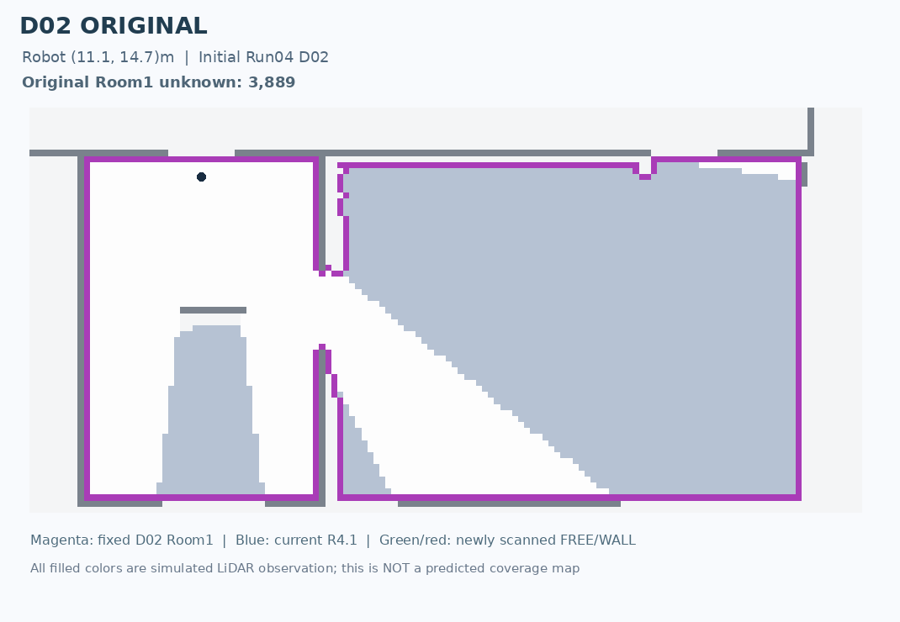
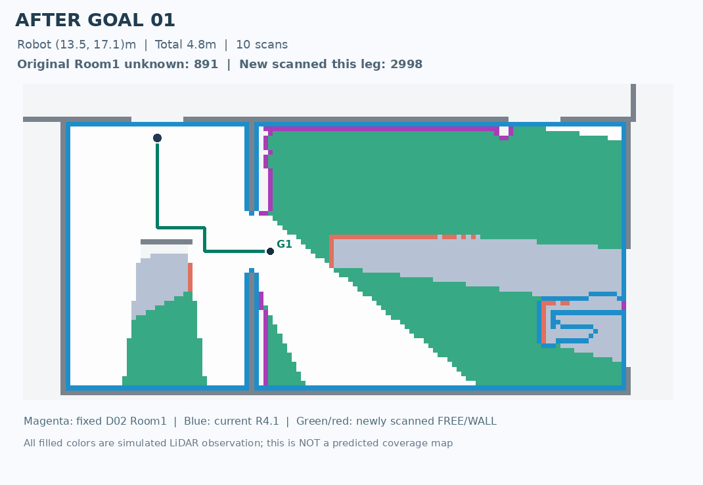
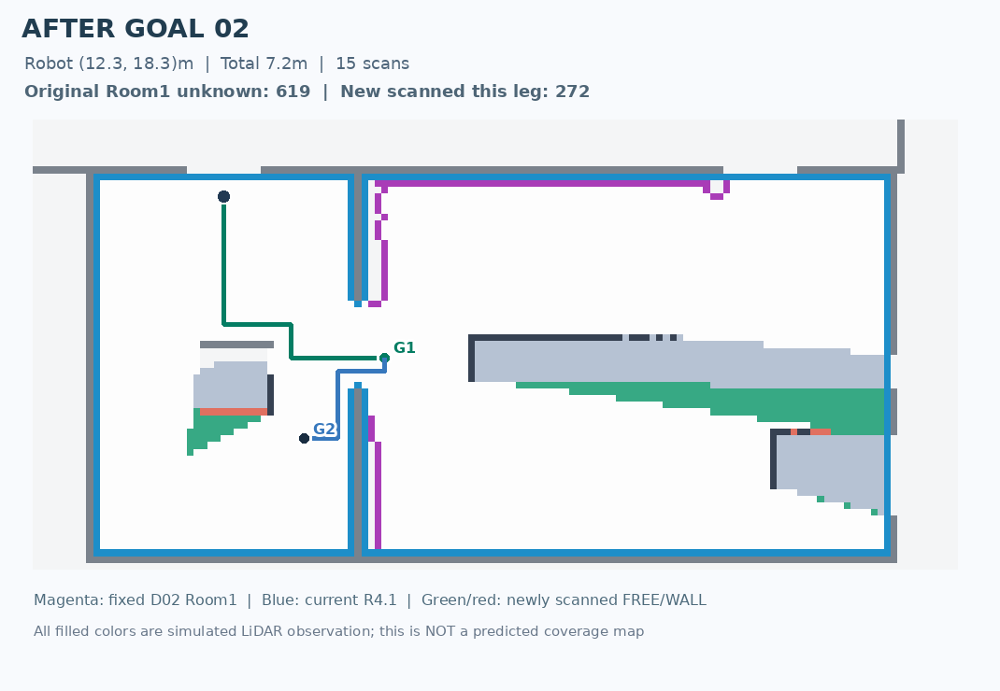
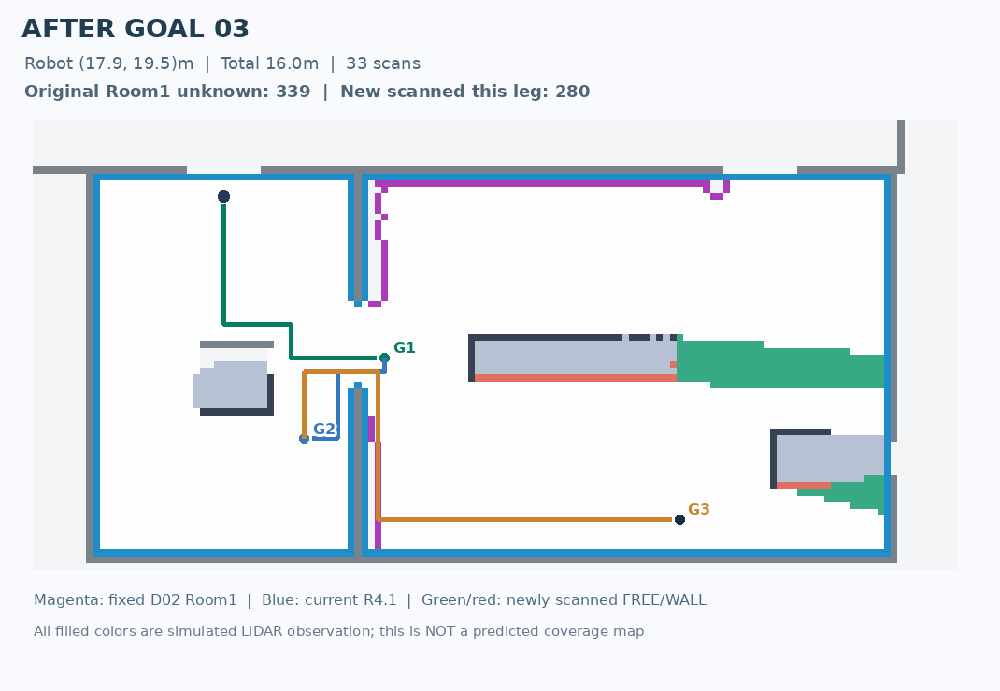
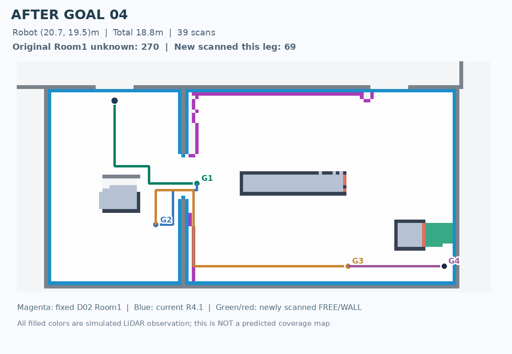
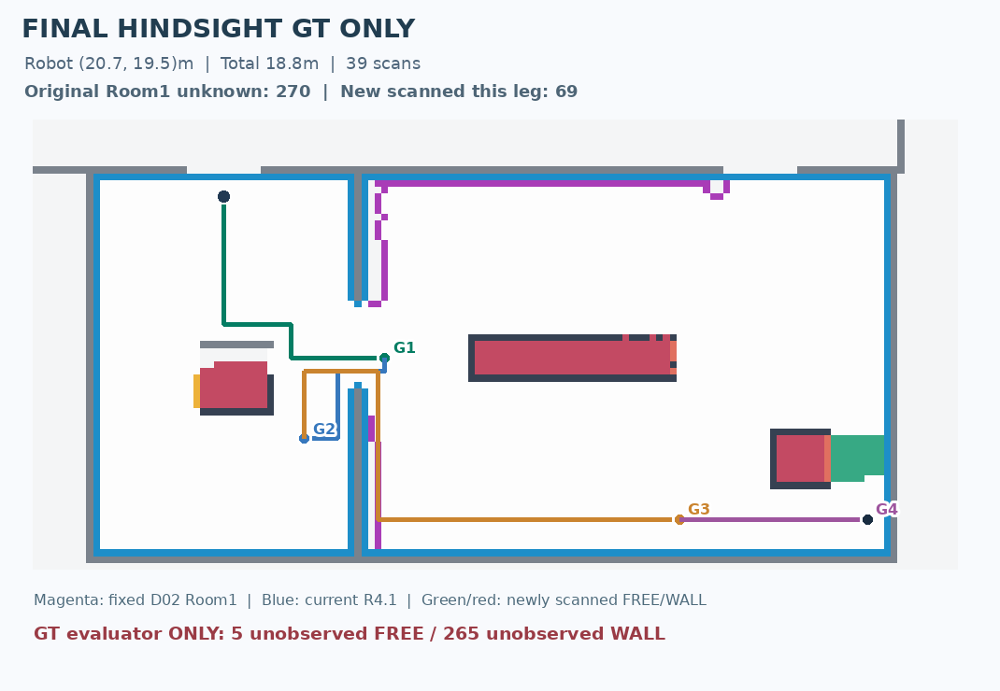

Robot sử dụng goal D02 do G2-R3 tự chọn, quét LiDAR tương thích mẫu gốc từ môi trường GT ẩn, sau mỗi goal tính lại LaMa ba mô hình, Room Node V4-R4.1 và lập lại chuỗi mới. Không dùng GT để chọn goal. Bản đồ GT trong phần đánh giá cuối chỉ xuất hiện sau khi quá trình chạy kết thúc.
Stopped: DEFER_NO_POSITIVE_STRUCTURAL_CHAIN · 4 goal(s) · 18.8 m · 39 scans · original room unknown left 270.
| # | Goal (x,y)m | Đường tích lũy | Unknown trong Room1 cũ | Next G2 plan |
|---|---|---|---|---|
| 1 | [13.5, 17.1] | 4.8 m | 891 | [[12.3, 18.3], [17.9, 19.5]] |
| 2 | [12.3, 18.3] | 7.2 m | 619 | [[17.9, 19.5]] |
| 3 | [17.9, 19.5] | 16.0 m | 339 | [[20.7, 19.5]] |
| 4 | [20.7, 19.5] | 18.8 m | 270 | [] |






Giới hạn: raycast 2D trên GT raster, không phải LiDAR MapEx source-native; replanning sau mỗi goal chứ không phải mỗi scan; chưa chứng minh an toàn vật lý hay toàn cục tối ưu.